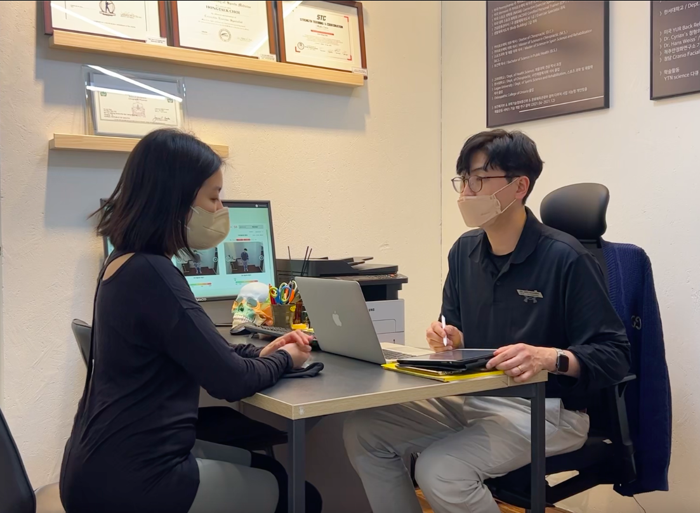

성수본점
REAL 성수
평가 장비와 본사 강사진이 함께합니다. 물리치료·근골격 전공 강사가 1:1을 진행합니다.
오시는 길
주소 서울특별시 성동구 성수일로 8길 39, 3층
위치 성수역 1번 출구 도보 약 3분
시간 평일 09:00–22:00 · 토 09:00–16:00 · 일·공휴일 휴무

이 지점의 수업
물리치료·근골격 전공 강사진이 1:1을 진행합니다. 풀어 주는 기술만이 아니라, 원인을 읽는 수업입니다.